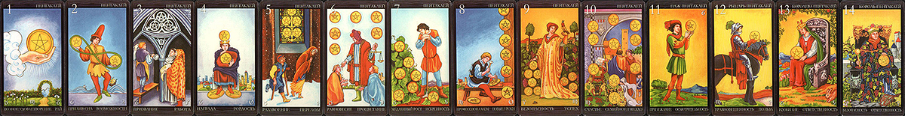

Старшие Арканы отражают общую тенденцию события, ситуации, а также личности.
Задача Младших Арканов в гадании — показать ту конкретную ситуацию или событие, качество, смысл и мораль которых выражают Старшие арканы. Младшие Арканы представляют конкретную характеристику, детали, «расшифровку».
Старшие и Младшие Арканы тесно взаимодействуют между собой и взаимно влияют друг на друга.
Пантакли— это деньги и денежные отношения, азарт, игра, а также интеллект, общение, информация, система общественных взглядов.
Пантакли помогали оценить денежные обстоятельства и поступление информации.
В личном раскладе Мечи показывают нам, как человек будет действовать в той или иной ситуации, и характеризуют его темперамент. Посохи дают нам представление о чертах характера человека, связанных с материальной сферой, а Пантакли отражают интеллектуальные способности, коммуникабельность, сообразительность. Чаши помогут оценить душевные качества человека, шкалу внутренних ценностей.

Туз Пантаклей
Туз Пантаклей в личном раскладе указывает на такие качества, как самодовольство, вкус к жизни, стремление к удовольствиям и деньгам. При гадании на мероприятие эта карта предвещает удачу, возможно, получение денег. Туз Пантаклей обычно придает соседнему Старшему Аркану более житейский оттенок, лишает его духовного смысла.
Двойка Пантаклей
Эта карта символизирует вечную игру с нами в «чет» и «нечет» и бесконечную переменчивость мира. Двойка Пантаклей предвещает нестабильность, изменения в информационной сфере, общественных отношениях, финансовых делах. В личном раскладе эта карта означает склонность к азартным играм, ненадежность в отношениях с людьми, стремление воспринимать свою жизнь и судьбу окружающих как игру. Такому человеку свойственно сочетание легкомыслия с хитростью и жадности со щедростью. В гадании на мероприятие Двойка Пантаклей предупреждает, что вы можете оказаться игрушкой, пешкой в чьей-то игре, или сами захотите манипулировать кем-то. Это зависит от соседних Арканов, как Старших, так и Младших. Если вы гадаете на встречу с деловым партнером — приготовьтесь к любым уловкам и хитростям с его стороны. Если эта карта выпала в ответ на вопрос о вложении денег — не стоит этого делать; вспомните слова поэта, хвалившего того, кто «дедов верный капитал коварной двойке не вверял».
Тройка Пантаклей
Тройка Пантаклей означает закладку интеллектуального базиса, установление новых социальных связей, приобретение начального капитала. В личном раскладе свидетельствует о коммуникабельности, об умении слушать собеседника и извлекать из разговора нужную для себя информацию. Такой человек всегда имеет небольшой, но твердый заработок, и деньги не являются для него самоцелью. При гадании на начало какого-либо дела Тройка Пантаклей призывает к спокойствию, трудолюбию и немного- словию, гарантирующим успех. Если вам сложно принять какое-либо решение, эта карта рекомендует подождать с резкими переменами в судьбе и пока довольствоваться тем, что у вас есть.
Четверка Пантаклей
Четверка Пантаклей символизирует стабильность и прочность в информационной, общественной и финансовой сферах. В личном раскладе эта карта указывает на то, что человек уже достиг всего, чего хотел. У него есть образование, которое его устраивает, а к «лишним» знаниям он не стремится, есть должность, с которой он справляется, зарплата, на которую вполне можно жить. Карта подчеркивает также скупость, грубоватость характера, нежелание смотреть дальше собственного носа. При гадании на мероприятие означает, что достигнуть желаемого будет трудно, ваша активность будет ограничена некими рамками, в основном денежными или общественным мнением, недостатком, а может быть, недоступностью нужной информации.
Пятерка Пантаклей
Пятерка Пантаклей символизирует творческое начало, изобретательность, новаторство в информационной, социальной и финансовой сфере. В личном раскладе эта карта означает общительность, склонность к интеллектуальному поиску, стремление к экспериментам в области бизнеса, которые иногда могут заканчиваться плачевно.
Подобный человек часто своим поведением эпатирует общество, его считают странным и неразумным. При гадании на мероприятие Пятерка Пантаклей предвещает неожиданные, даже неприятные ситуации, неординарные предложения. Возможно, кто-то захочет убедить вас вложить свои деньги в какой-нибудь безумный проект.
Шестерка Пантаклей
Шестерка Пантаклей символизирует гармонию в социальной и денежной сфере, благотворительность, меценатство. В личном раскладе подчеркивает в человеке такие качества, как щедрость, готовность поделиться своими знаниями и опытом, контактность, страсть к пересудам. При гадании на мероприятие предсказывает возможное получение денег, нужной информации или общественного одобрения, но если эта карта соседствует с Повешенным — отдавать и делиться придется вам.
Семерка Пантаклей
Эта карта означает не примитивный, а более сознательный уровень отношения к деньгам и информации, она как бы вносит элемент искусства в эту сферу жизни. «Это было новое понимание торговли, это было явное вторжение фантазии в коммерцию» (Э. Золя). В личном раскладе Семерка Пантаклей обычно указывает на то, что человек, занимаясь бизнесом, воспринимает его скорее как творческий процесс, а не средство наживы. Работая с информацией, он может выделить в ней главное и существенное, а также доходчиво, внятно, интересно ее подать. Если эта карта выпадает в сочетании со Старшим Арканом Великий Иерофант или Папесса — она означает, что спрашивающий обладает педагогическими способностями, а вместе с Правосудием — указывает на предрасположенность к юридической карьере. При гадании на ситуацию Семерка Пантаклей предсказывает успех, но только с условием, что вы не опуститесь до скупости и лжи.
Восьмерка Пантаклей
Карта символизирует порядок, даже некоторое ограничение свободы в сфере денежных и информационных отношений. В личном раскладе Восьмерка Пантаклей характеризует человека как безупречно честного в деловом отношении, правдивого, а также указывает на такие качества, как ясность мысли и краткость речи. Эта карта часто предсказывает приход или отдачу (в зависимости от значения соседних карт) законно полагающихся денег, например получение зарплаты. При гадании на мероприятие Восьмерка Пантаклей предупреждает, что общение будет затруднено, придется вести себя очень корректно, иначе вы рискуете выглядеть не лучшим образом в глазах общества. Если эта карта выпадет при гадании на получение денег взаймы, можно оставить подобную мысль — в данный момент это нереально.
Девятка Пантаклей
Эта кар^а означает затруднения в денежных операциях, деловых переговорах, общении. В личном раскладе Девятка Пантаклей обычно указывает на склонность к малорезультативному обсуждению насущных проблем, стремление осуждать других, пассивность в делах, неразумность в тратах. При гадании на отношения с партнером предсказывает охлаждение и потерю интереса к общению. В раскладе на мероприятие эта карта предвещает трудности в достижении желаемого. Девятка Пантаклей — тревожный знак в раскладе, она заставляет задать себе вопрос: «А может быть, причина моих неудач — в беспечности и пассивном отношении к жизни?»
Десятка Пантаклей
Карта символизирует полную погруженность во внешнюю жизнь, когда активное общение, участие в дружеских компаниях или погоня за деньгами становятся главной целью. В личном раскладе Десятка Пантаклей отражает такие черты характера, как неутомимое любопытство, излишнюю говорливость, постоянное желание быть в толпе. Такие люди, как правило, не лишены обаяния, имеют кучу разнообразных знакомых, читают много и без разбору. Но за благополучной внешностью часто скрыта ранимая, неуверенная в себе личность, для которой юмор - единственная защита. При гадании на мероприятие эта карта предсказывает удачу, но предупреждает о необходимости как следует укрепить «тылы», более активно разрекламировать свой замысел. Десятка Пантаклей также предсказывает обширность контактов, переписки, встреч. Ьсли эта карта выпадает вместе со Старшими Арканами, то Дьявол означает, что на массовые сборища лучше не ходить, Башня — следует поменьше рассказывать знакомым о ваших планах, иначе они могут провалиться, Маг предупреждает о сплетнях за вашей спиной. Десятка Пантаклей заставляет задуматься о необходимости развития своего внутреннего мира и поставить перед собой вопрос: «Не слишком ли меня увлекают сиюминутные дела?»
Паж Пантаклей
Аркан означает зарождение нового общения, начало любого дела, связанного с переговорами, поездками, денежными операциями. Эта карта также может означать начало новой карьеры в бизнесе, средствах массовой информации. В личном раскладе Паж Пантаклей указывает на неискушенность в денежных делах, неумение добиваться своих целей, недостаток житейской мудрости. Такой человек — «сущее дитя», по мнению окружающих. В раскладе на мероприятие карта указывает на необходимость искать новых партнеров, идти непроторенными путями, чтобы достичь успеха. Особенно ярко значение этой карты проявляется в сочетании со Старшим Арканом Колесница. При гадании на получение денег Паж Пантаклей предсказывает неудачу: скорее всего, у вашего должника в кармане пусто.
Рыцарь Пантаклей
Этот Аркан отвечает за движение денежных средств и передачу информации. Такая фигура, как Рыцарь Пантаклей, была уважаема во все времена. Она символизирует весь странствующий и неутомимый люд, от которого мы узнаем про то, «какое в свете чудо». В личном раскладе эта карта указывает на любознательность, любовь к поездкам, широкий круг общения. Также может означать деловую командировку или человека «разъездной» профессии. Но на низком уровне значение Рыцаря Пантаклей может проявиться как любовь к сплетням, склонность занимать и перезанимать деньги. В гадании на мероприятие карта предсказывает успех, особенно в делах, связанных со средствами массовой информации, но предупреждает, что сидеть на месте нельзя - момент требует быстрых решений. Со Старшим Арканом Дьявол может означать жульничество или поступление ложной информации.
Королева Пантаклей
Символизирует самовыражение женщины в социальной сфере и предсказывает профессиональные успехи женщинам, работающим в торговле и средствах массовой информации. В личном раскладе Королева Пантаклей указывает на умение тратить и накапливать деньги, практическую сметку. Такой человек, как правило, знает, кому, что и когда надо сказать, что подарить, сколько дать. Особенно сильно эти качества проявляются, если карта выпадает в сочетании со Старшим Арканом Папесса. При гадании на мероприятие Королева Пантаклей предвещает успех тому, кто не будет тратить зря ни денег, ни слов. Карта предупреждает: храните чужие секреты! Королева Пантаклей не любит суеты и болтовни, ее девизом может быть один из принципов дзен- буддизма: «Сидишь — и сиди себе, идешь — и иди себе, главное — не мельтешись попусту».
Король Пантаклей
Символ интеллекта, социальной значимости. В личном раскладе карта отражает такие качества, как умение «делать деньги», широкий кругозор, способность манипулировать информацией и использовать ее в своих целях. Такие люди обычно наделены смекалкой, быстро и правильно реагируют на все происходящее вокруг. Они почти всегда добиваются успехов в карьере и идут к своей цели с блеском — о них говорят, их ставят в пример. Но на пути у Короля Пантаклей лучше не стоять: несмотря на внешнюю любезность и обаяние, он совершенно бессердечен и не отягощен мора
лью. При гадании на мероприятие эта карта предсказывает, что на вас, возможно, ляжет материальная ответственность. В торговых делах сулит успех. В сочетании со Старшим Арканом Император Король Пантаклей может толковаться как получение материальной помощи от вышестоящего покровителя, с Луной — потеря крупной суммы денег.